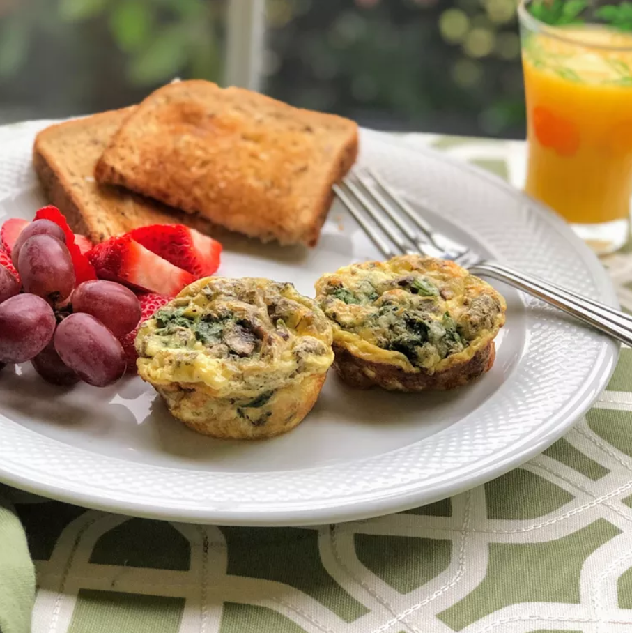

Spinach Mushroom Egg Muffin

Description
Easy egg muffins with spinach, mushrooms, and cheese.
Ingredients
- Cooking spray
- 10 ounce (28g) frozen spinach
- 4.5 ounce (127g) chopped mushrooms
- 1 cup shredded mozzarella cheese
- 10 large eggs
- 1/3 cup sour cream
- Salt and Pepper to taste
- 1 tablespoon Italian seasoning
- 1 teaspoon garlic salt
Steps
- Preheat the oven to 375F (190C)
- Spray a 12-cup silicone muffin pan with cooking spray.
Divide spinach and mushrooms evenly among the muffin cups, filling each about 2/3 full.
Sprinkle 1 teaspoon mozzarella cheese on top.
- Beat eggs and sour cream together until well combined. Season with salt and pepper.
Mix in Italian seasoning and garlic salt. Pour into muffin cups until almost full.
- Bake in the preheated oven until muffins have risen, tops are lightly browned, and a toothpick inserted
into the center comes out clean, 20 to 25 minutes. Loosen muffins with a butter knife
and remove from the pan.